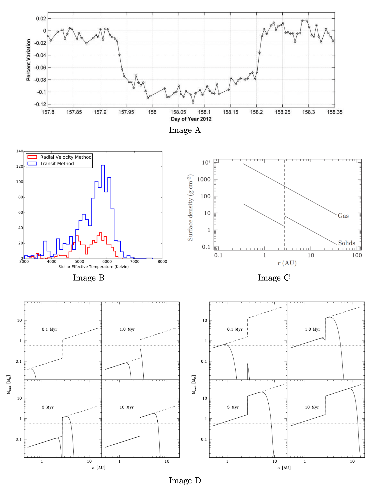
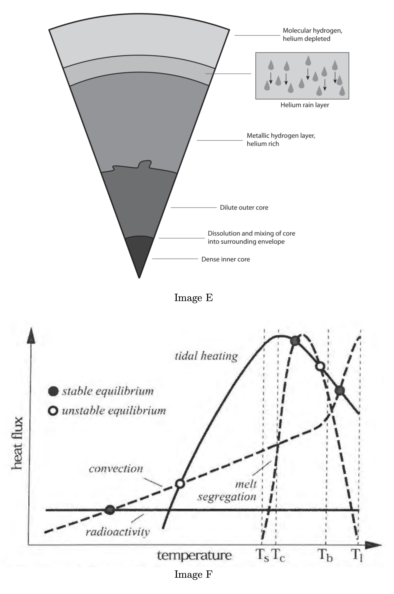

The Sun is indeed at the center of our Solar System, with all planets orbiting around it in a heliocentric system.
🔬 Planetary Scientist Deep Dive
Historical Context & Scientific Revolution
The heliocentric model represents one of the most profound paradigm shifts in human understanding. Nicolaus Copernicus (1543) first proposed this model, later refined by Johannes Kepler's elliptical orbits (1609-1619) and Isaac Newton's gravitational theory (1687).
Modern Precision Measurements
Barycenter: Technically, all objects orbit the Solar System's center of mass (barycenter), which lies ~450 km from the Sun's center due to Jupiter's influence
Solar wobble: The Sun actually "wobbles" with an amplitude of ~12 m/s due to planetary gravitational perturbations
Astrometric precision: Modern measurements using Very Long Baseline Interferometry (VLBI) can detect stellar positions to microarcsecond precision
Implications for Exoplanet Science
Understanding our heliocentric system is crucial for exoplanet detection:
Astrometry: Direct measurement of stellar position changes (future space missions like Gaia)
Reference frame: Our Solar System serves as the fundamental reference for understanding planetary system architecture
Gravitational Dynamics
The Sun contains 99.86% of the Solar System's mass (1.989 × 10³⁰ kg), creating the dominant gravitational field that maintains planetary orbits through the inverse square law: F = GMm/r².
References: Murray & Dermott (1999) "Solar System Dynamics"; Seager (2010) "Exoplanets"; IAU Resolution B1 (2006) on planetary definition
2. Saturn is the most massive planet in the Solar System.
Answer: FALSE
Jupiter is the most massive planet in the Solar System, with a mass of approximately 318 Earth masses, while Saturn has about 95 Earth masses.
🔬 Planetary Scientist Deep Dive
Mass Comparison & Formation History
Jupiter's enormous mass (1.898 × 10²⁷ kg) makes it 2.5 times more massive than all other planets combined! Saturn, while still massive at 5.683 × 10²⁶ kg, is significantly lighter despite being almost as large in diameter.
Why the Mass Difference?
Formation timing: Jupiter formed first in the early Solar System, capturing more of the available gas and dust
Core composition: Jupiter has a denser core with more rock and ice, while Saturn has proportionally more hydrogen and helium
Density difference: Jupiter's density is 1.33 g/cm³ vs Saturn's 0.69 g/cm³ (Saturn would float in water!)
Gravitational Influence
Jupiter's massive gravity:
Asteroid shepherd: Prevents asteroid belt from forming a planet
Comet catcher: Protects inner planets from impacts (like Shoemaker-Levy 9 in 1994)
Trojan asteroids: Captures objects at its L4 and L5 Lagrange points
Moon system: Has 95 known moons due to strong gravitational capture
Interior Structure Differences
Both planets have metallic hydrogen cores, but Jupiter's higher pressure creates a more compact, denser structure. Saturn's lower mass means less gravitational compression, resulting in its "puffy" appearance.
References: Guillot et al. (2018) "Giant Planet Interiors"; Wahl et al. (2017) Juno mission results; Nettelmann et al. (2013) Saturn interior models
3. Pluto was "demoted" to a dwarf planet because it was not round enough.
Answer: FALSE
Pluto was reclassified as a dwarf planet because it has not cleared its orbital neighborhood of other objects, not because of its shape. Pluto is actually round due to its own gravity.
🔬 Planetary Scientist Deep Dive
The 2006 IAU Planet Definition
The International Astronomical Union established three criteria for planetary status:
Orbits the Sun: ✓ Pluto meets this requirement
Hydrostatic equilibrium: ✓ Pluto is round due to its own gravity (mass ~1.3 × 10²² kg)
Cleared orbital neighborhood: ✗ Pluto shares its orbital space with many Kuiper Belt objects
What Does "Clearing the Neighborhood" Mean?
A planet must be gravitationally dominant in its orbital zone, meaning it has:
Swept up debris: Captured or ejected most objects in its orbital path
Orbital resonances: Controls the motion of nearby objects through gravity
Mass dominance: Much more massive than all other objects in its orbital zone combined
Pluto's Orbital Neighborhood
Kuiper Belt location: Pluto orbits within a region filled with thousands of similar objects
Mass comparison: Pluto's mass is only ~7% of all objects in its orbital zone
Neptune's influence: Neptune actually controls Pluto's orbit through a 3:2 resonance
Why the Controversy?
Many scientists debate this definition because:
Earth's case: Earth hasn't "cleared" all asteroids that cross its orbit
Location matters: The same object might be a planet closer to the Sun but a dwarf planet farther out
Historical significance: Pluto was considered a planet for 76 years (1930-2006)
References: IAU Resolution B5 (2006); Stern & Levison (2002) "Regarding the criteria for planethood"; Soter (2006) "What is a planet?"
4. Arrokoth is in the Asteroid Belt.
Answer: FALSE
Arrokoth (formerly 2014 MU69) is located in the Kuiper Belt, far beyond Neptune's orbit, not in the Asteroid Belt between Mars and Jupiter.
🔬 Planetary Scientist Deep Dive
Arrokoth: A Pristine Time Capsule
Arrokoth (meaning "sky" in Powhatan language) is a contact binary object discovered in 2014 and visited by New Horizons in 2019. It represents one of the most pristine remnants from the early Solar System.
Location: Deep in the Kuiper Belt
Distance: ~44 AU from the Sun (compared to Asteroid Belt at 2-4 AU)
Cold Classical Kuiper Belt: A region of objects that haven't been significantly disturbed since formation
Temperature: Surface temperature around -230°C (-382°F)
Orbital period: Takes about 298 Earth years to orbit the Sun
Why Location Matters for Science
Asteroid Belt objects: Have been heated, altered, and collisionally processed over 4.6 billion years
Kuiper Belt objects: Remain frozen and largely unchanged since Solar System formation
Preservation: Arrokoth's red color comes from organic compounds (tholins) that would be destroyed closer to the Sun
Formation Insights
Arrokoth's gentle contact binary shape tells us:
Low-velocity collision: Two objects merged at walking speed (~2 m/s)
Planetesimal formation: Shows how small building blocks of planets came together
Streaming instability: Supports models where particles clumped together gravitationally rather than through violent collisions
New Horizons Mission Achievement
The 2019 flyby was the most distant object ever visited by a spacecraft, occurring 4 billion miles from Earth with a communication delay of over 6 hours!
References: Stern et al. (2019) "Initial results from the New Horizons exploration of 2014 MU69"; McKinnon et al. (2020) "The solar nebula origin of (486958) Arrokoth"
5. Venus is the hottest planet in the Solar System.
Answer: TRUE
Despite being farther from the Sun than Mercury, Venus is the hottest planet due to its thick atmosphere (96% CO₂) creating an extreme greenhouse effect, with surface temperatures around 462°C (864°F).
🔬 Planetary Scientist Deep Dive
The Runaway Greenhouse Effect
Venus demonstrates the most extreme greenhouse effect in our Solar System. While Mercury reaches 427°C (800°F) on its sunlit side, Venus maintains a constant 462°C (864°F) everywhere - even on its night side!
Atmospheric Composition & Pressure
96% Carbon Dioxide: Creates an incredibly dense atmosphere
3.5% Nitrogen: With traces of sulfur dioxide, water vapor, and other gases
Surface pressure: 92 times Earth's pressure (equivalent to being 1 km underwater)
Sulfuric acid clouds: Reflect 75% of sunlight but trap heat underneath
How the Greenhouse Effect Works
Solar radiation: Penetrates the atmosphere and heats the surface
Infrared re-emission: Surface tries to radiate heat back to space
CO₂ absorption: Dense atmosphere absorbs and re-radiates heat back down
Heat trapping: Creates a "thermal blanket" effect
Venus vs. Mercury Temperature Comparison
Mercury day side: 427°C (no atmosphere to retain heat)
Mercury night side: -173°C (heat radiates away instantly)
Temperature variation: Venus varies only ~2°C between day and night
Implications for Climate Science
Venus serves as a cautionary example for Earth's climate:
Early Venus: May have had oceans like early Earth
Water loss: Solar heating caused water vapor to rise and dissociate
Hydrogen escape: Lost to space, leaving oxygen to react with surface rocks
CO₂ buildup: No water cycle to remove atmospheric carbon dioxide
References: Lewis (1996) "Rain of Iron and Ice"; Seiff et al. (1986) Venera atmospheric data; Hashimoto & Konishi (2003) "Runaway greenhouse effect on Venus"
6. Io is a moon around Neptune.
Answer: FALSE
Io is one of Jupiter's four largest moons (Galilean moons), not Neptune's. It's the most volcanically active body in the Solar System.
🔬 Planetary Scientist Deep Dive
Io: The Volcanic Powerhouse
Io is the most volcanically active body in our Solar System, with over 400 active volcanoes! It's the innermost of Jupiter's four Galilean moons, discovered by Galileo Galilei in 1610.
The Galilean Moon System
Io: Closest to Jupiter, volcanic and sulfur-rich
Europa: Ice-covered ocean world
Ganymede: Largest moon in Solar System, has magnetic field
Callisto: Heavily cratered, oldest surface
Tidal Heating: The Energy Source
Io's incredible volcanic activity comes from tidal heating:
Orbital resonance: Io orbits twice for every Europa orbit, four times for every Ganymede orbit
Sulfur composition: Volcanoes spew sulfur and sulfur dioxide
Plume heights: Some volcanic plumes reach 500 km high
Surface renewal: Volcanic activity resurfaces Io every ~1 million years
No impact craters: Constant volcanism erases all craters
Why Not Neptune?
Neptune's moons are very different:
Triton: Neptune's largest moon, likely a captured Kuiper Belt object
Cold and distant: Too far from Sun for significant tidal heating
Different composition: Icy rather than rocky/sulfurous
References: Peale et al. (1979) "Melting of Io by tidal dissipation"; Lopes & Spencer (2007) "Io after Galileo"; de Kleer & de Pater (2016) "Time variability of Io's volcanic activity"
7. Triton is geologically active.
Answer: TRUE
Triton, Neptune's largest moon, shows signs of geological activity including nitrogen geysers that can shoot material up to 8 km high.
8. Iapetus is known for its large ridge and two-tone (black and white) coloration.
Answer: TRUE
Iapetus has a distinctive equatorial ridge up to 20 km high and contrasting light (Roncevaux Terra) and dark (Cassini Regio) hemispheres.
9. The Galileo spacecraft is best-known for exploring Saturn for several years.
Answer: FALSE
Galileo explored Jupiter and its moons from 1995-2003, not Saturn. The Cassini mission was responsible for exploring Saturn.
10. Venus has no moons.
Answer: TRUE
Venus has no natural satellites, making it one of only two planets in our Solar System without moons (the other being Mercury).
11. Uranus is the sixth planet from the Sun.
Answer: FALSE
Uranus is the seventh planet from the Sun. The order is: Mercury, Venus, Earth, Mars, Jupiter, Saturn, Uranus, Neptune.
12. HL Tauri is surrounded by a protoplanetary disk.
Answer: TRUE
HL Tauri is a young star system (~1 million years old) with a prominent protoplanetary disk showing clear gaps where planets are likely forming.
13. The planets in the TOI-561 system were discovered through direct imaging.
Answer: FALSE
TOI-561 planets were discovered using the transit method by NASA's TESS (Transiting Exoplanet Survey Satellite), not through direct imaging.
14. The "Great Dark Spot" is on Neptune.
Answer: TRUE
The Great Dark Spot was a large storm system on Neptune, similar to Jupiter's Great Red Spot, first observed by Voyager 2 in 1989.
15. HR 8799 was discovered using the Kepler space telescope.
Answer: FALSE
HR 8799's planets were discovered through direct imaging using ground-based telescopes, not by the Kepler space telescope which used the transit method.
Section A: Fill-in-the-Blank Questions
10 Questions - 2 Points Each - Total: 20 Points
16.'s largest moon is named Titania.
Answer: URANUS
Titania is the largest moon of Uranus, discovered by William Herschel in 1787. It has a diameter of about 1,578 km.
17. is the largest object in the Solar System that is not in hydrostatic equilibrium.
Answer: IAPETUS
Iapetus has an irregular, non-spherical shape and hasn't achieved hydrostatic equilibrium, making it the largest such object in our Solar System.
18. Alice and Ralph are instruments on the spacecraft that visited the dwarf planet .
Answer: NEW HORIZONS, PLUTO
New Horizons carried the Alice ultraviolet spectrometer and Ralph visible/infrared imager to study Pluto during its 2015 flyby.
19. The most massive "Ice Giant" in the Solar System is .
Answer: NEPTUNE
Neptune (17.1 Earth masses) is more massive than Uranus (14.5 Earth masses), making it the most massive ice giant.
20. is a "super-Neptune" that is one of the youngest planets ever discovered.
Answer: K2-33b
K2-33b is a young exoplanet (5-10 million years old) orbiting a pre-main sequence star, making it one of the youngest known planets.
21. Although is a moon, scientists believe it originally formed as a dwarf planet and was later captured.
Answer: TRITON
Triton's retrograde orbit and composition similar to Kuiper Belt objects suggest it was a captured dwarf planet, possibly similar to Pluto.
22. TOI-561 was discovered using .
Answer: TESS
The Transiting Exoplanet Survey Satellite (TESS) discovered the TOI-561 system using the transit photometry method.
23. has a thick atmosphere consisting mainly of CO₂ and is thought to have an internal structure similar to that of Earth's.
Answer: VENUS
Venus has a dense CO₂ atmosphere (96% CO₂) and is considered Earth's "twin" in terms of size and internal structure.
24. The planets in the system were discovered through direct imaging.
Answer: HR 8799
HR 8799 is famous for having four directly imaged exoplanets, discovered using advanced coronagraph techniques.
25. The most recent mission to Venus was .
Answer: MAGELLAN
NASA's Magellan mission (1990-1994) was the last major mission to Venus, using radar to map 98% of the planet's surface.
Section A: Feature Matching Questions
20 Questions - 2 Points Each - Total: 40 Points
26. Tombaugh Regio
Answer: PLUTO
The heart-shaped region on Pluto, named after Clyde Tombaugh who discovered Pluto in 1930.
27. Maxwell Montes
Answer: VENUS
The highest mountain on Venus at 10.8 km above mean surface level, named after James Clerk Maxwell.
28. Roncevaux Terra
Answer: IAPETUS
The bright, leading hemisphere of Saturn's moon Iapetus, contrasting with the dark Cassini Regio.
29. Leviathan Patera
Answer: TRITON
A large volcanic caldera on Neptune's moon Triton, indicating past geological activity.
30. Oval BA
Answer: JUPITER
A large storm on Jupiter, also known as "Red Spot Jr.," formed from the merger of three smaller storms.
31. Chaac-Camaxtli region
Answer: IO
A volcanic region on Jupiter's moon Io, named after Mayan rain and fire deities.
32. Cthulhu Macula
Answer: PLUTO
A large dark region on Pluto, informally named after the fictional cosmic entity created by H.P. Lovecraft.
33. Amirani
Answer: IO
An active volcano on Io, named after the Georgian fire god, with lava flows extending over 300 km.
34. Ishtar Terra
Answer: VENUS
One of the major highland regions on Venus, about the size of Australia, named after the Babylonian goddess of love.
35. Turgis Crater
Answer: IAPETUS
A large impact crater on Saturn's moon Iapetus, demonstrating the moon's ancient, heavily cratered surface.
36. Set Catena
Answer: TRITON
A chain of craters or depressions on Neptune's moon Triton, possibly formed by tidal forces or impacts.
37. Aphrodite Terra
Answer: VENUS
The largest highland region on Venus, roughly the size of South America, named after the Greek goddess of love.
38. Loki Patera
Answer: IO
The most powerful volcano on Io and in the Solar System, named after the Norse trickster god.
39. Cassini Regio
Answer: IAPETUS
The dark hemisphere of Saturn's moon Iapetus, named after Giovanni Cassini who discovered the moon.
40. Small Dark Spot
Answer: NEPTUNE
A storm system on Neptune, smaller than the Great Dark Spot, observed by Voyager 2.
41. Ruach Planitia
Answer: TRITON
A smooth plain on Neptune's moon Triton, indicating relatively recent geological activity.
42. Engelier
Answer: IAPETUS
A surface feature on Saturn's moon Iapetus, part of its complex and varied terrain.
43. Yasu Sulci
Answer: TRITON
Grooved terrain on Neptune's moon Triton, indicating tectonic activity in the moon's past.
44. Great Cold Spot
Answer: JUPITER
A cold region in Jupiter's upper atmosphere, discovered through infrared observations.
45. Hillary Montes
Answer: PLUTO
Mountain range on Pluto reaching heights of 3.5 km, named after Sir Edmund Hillary.
Section B: Image Analysis Questions
13 Questions - Variable Points - Total: 90 Points
📸 SECTION B IMAGE SET Reference these images when answering the questions below
Images 1-9: Various Solar System Objects
Images 10-18: Additional Solar System Objects
Image Viewer
Click on an image reference button to view images here.
46. (2 points) Order the objects shown in the following images by their distance from the Sun, from closest to farthest: 2, 7, 8, 9, and 11.
📸 Referenced Images:
Answer: 11, 9, 8, 2, 7
Based on orbital distances from the Sun, considering the planetary order and specific objects shown in each image.
47. (2 points) Order the objects shown in the following images by their mass, from least massive to most massive: 3, 4, 8, 10, 13.
📸 Referenced Images:
Answer: 8, 3, 10, 4, 13
Ordered by the mass of the celestial objects shown in the respective images.
48. Jupiter Analysis (10 points total)
(a) What planet is shown in Image 1?
(b) What telescope or spacecraft took this image?
(c) What the name of the feature marked with an "A" on this image?
(d) In your own words, explain what the feature from the previous part is.
(e) Which image shows this object in UV?
📸 Referenced Images:
Answers:
(a) Jupiter (b) Juno spacecraft (c) Great Red Spot (d) A giant storm system on Jupiter that has been raging for centuries, larger than Earth (e) Image 13
The Great Red Spot is an anticyclonic storm that has been observed for over 300 years, with winds reaching 400+ km/h.
49. Pluto Analysis (8 points total)
(a) What object is shown in Image 2?
(b) What spacecraft took this image?
(c) What instrument on this spacecraft was used to make this image?
(d) This spacecraft flew by this object, but did not orbit it. Why was this the case?
📸 Referenced Images:
Answers:
(a) Pluto (b) New Horizons (c) LORRI (Long Range Reconnaissance Imager) (d) New Horizons was traveling at ~14 km/s when it reached Pluto. Slowing down to orbit would require enormous amounts of fuel, making the spacecraft much heavier and the mission much longer and more expensive.
The high velocity was necessary to reach Pluto in a reasonable timeframe, but made orbital insertion impractical with current technology.
50. Triton Analysis (10 points total)
(a) What moon is shown in Image 3?
(b) What telescope or spacecraft took this image?
(c) What image shows the planet around which this moon orbits in visible light?
(d) The foreground of this image is generally very smooth, with few (if any) notably craters. Based on this information, do you think this object is geologically active? Explain your answer.
(e) Although the surface of this object is rugged, there is a noticeable lack of any tall structures, like mountains. Why might this be the case?
📸 Referenced Images:
Answers:
(a) Triton (b) Voyager 2 (c) Image 18 (Neptune) (d) Yes, the smooth surface with few craters indicates geological activity that erases impact craters (e) Triton's surface consists of various ices that aren't strong enough to support large structures like mountains
Geological activity on icy bodies can resurface terrain through processes like cryovolcanism and sublimation.
51. Venus Surface Analysis (8 points total)
(a) Image 5 shows a perspective view of a crustal plateau on an object in our Solar System. What image shows the object on which this surface feature exists?
(b) What is the name of the region shown in Image 5?
(c) What telescope or spacecraft collected the data used to make Image 5?
(d) Planetary scientists have developed a number of models to explain the formation of crustal plateaus on this object. One of which is the Impact Model, which states that crustal plateaus were formed by lava ponds from mantle melting due to meteor impacts to the planet's thin lithosphere. What is one limitation of this model?
📸 Referenced Images:
Answers:
(a) Image 11 (Venus) (b) Ovda Regio (c) Magellan spacecraft (d) Meteor impacts may not generate enough magma, or the underlying magma may not transfer enough stress to create such large plateaus
Venus's crustal plateaus are complex geological features that likely formed through multiple processes over time.
52. Saturn Aurora (6 points total)
(a) Which planet is shown in Image 6?
(b) Which image shows an aurora occurring on this planet?
(c) In your own words, explain what causes this phenomenon.
📸 Referenced Images:
Answers:
(a) Saturn (b) Image 4 (c) Charged particles from the solar wind interact with Saturn's magnetic field, channeling along field lines into the atmosphere where they excite atmospheric gases, causing them to glow
Auroras on gas giants can be much more complex than on Earth due to additional particle sources from moons and rings.
53. Cantaloupe Terrain (6 points total)
(a) What is the name of the type of terrain shown in Image 17?
(b) This terrain contains many depressions (called cavi) that are approximately 30-40 kilometers in diameter. At first glance, these may seem like craters, but scientists don't think they are. Why?
(c) What is the most likely explanation for the formation of this terrain?
📸 Referenced Images:
Answers:
(a) Cantaloupe Terrain (b) They are roughly the same size and have smooth, consistent curves unlike random impact craters (c) Diapirism - rising of less dense material through denser material layers
This unique terrain on Triton suggests active geological processes involving density-driven material movement.
54. Iapetus Ridge (6 points total)
(a) Consider the object shown in Image 16. Which image shows the planet that this object orbits around in visible light?
(b) What telescope or spacecraft took Image 16?
(c) There are several theories for the formation of the large ridge shown in this image. Explain one of them.
📸 Referenced Images:
Answers:
(a) Image 6 (Saturn) (b) Cassini spacecraft (c) Possible explanations include: remnant from faster rotation when younger, icy material upwelling and solidifying, collisional accretion of ring material, or ancient convective overturn
The equatorial ridge on Iapetus remains one of the most puzzling features in the Solar System.
55. Uranus Infrared (10 points total)
(a) Which image shows Uranus in infrared light?
(b) What telescope or spacecraft took this image?
(c) This is a false-color image. In your own words, explain what a false-color image is.
(d) In what portion of the electromagnetic spectrum was this data collected?
(e) By taking multiple exposures at different wavelengths, scientists can observe this planet's atmosphere at different depths. How does this work? Which color in the image corresponds to the deepest layers of the atmosphere?
📸 Referenced Images:
Answers:
(a) Image 10 (b) Hubble Space Telescope (c) An image showing an object in colors different from visible light photography, typically using wavelengths we can't see (UV, IR) assigned to visible colors (d) Infrared light (e) Different wavelengths are absorbed at different depths in Uranus's atmosphere. Blue regions show the deepest atmospheric layers
Multi-wavelength observations allow scientists to probe different atmospheric depths and compositions.
56. Iapetus UV (6 points total)
(a) Which object is shown in Image 8?
(b) In what portion of the electromagnetic spectrum was this data collected?
(c) Which of the colors in the image (red, yellow, green, blue, or purple) correspond to regions with the highest water content?
📸 Referenced Images:
Answers:
(a) Iapetus (b) Ultraviolet (UV) (c) Red regions correspond to highest water content
UV spectroscopy can reveal the composition of surface materials by their absorption characteristics.
57. HL Tauri (8 points total)
(a) Image 15 shows HL Tauri. What spacecraft or telescope took this image?
(b) To the nearest power of 10, how old is this object, in years?
(c) What do astronomers believe the dark gaps in the disk represent?
(d) Given your answers to the previous two parts, in what way(s) does HL Tauri challenge our existing theories of planet formation?
📸 Referenced Images:
Answers:
(a) ALMA (Atacama Large Millimeter Array) (b) 10⁶ years (1 million years) (c) Planets forming in the disk (d) Planets this large shouldn't be able to form this quickly according to current models
HL Tauri suggests planet formation may occur faster than previously thought possible.
58. Krun Macula (8 points total)
(a) Which image shows a close-up of Krun Macula?
(b) Which image shows the object that this surface feature is on?
(c) This surface feature is characterized by areas that appear dark red. What class of compounds gives rise to its distinctive color?
(d) Krun Macula is one of four other dark spots in the region. Collectively, what are these dark spots known as?
Tholins are complex organic compounds formed by radiation processing of simple molecules.
Section C: Advanced Analysis Questions
5 Questions - Variable Points - Total: 96 Points
📸 SECTION C IMAGE SET Reference these images when answering the questions below

Images A-D: Various Solar System Objects

Images E-F: Additional Solar System Objects
59. Venus Transit Analysis (18 points total)
In 2012, Venus transited the Sun. Image A shows how the brightness of the Sun varied during the transit.
(a) Estimate the transit duration in hours
(b) Explain limb darkening and why it causes the curved light curve
(c) Sketch the light curve without limb darkening
(d) Why does the calculated Venus radius appear 3.6× larger than actual?
(e) Would a "bright" exoplanet give an overestimate or underestimate of radius?
(f) How can transits reveal atmospheric composition?
Answers:
(a) 6-8 hours (accept reasonable estimates) (b) Limb darkening occurs because the star's center appears brighter than edges due to temperature gradients. During transit, the planet first covers dimmer edge regions, then progressively covers brighter central regions, creating the curved shape (c) Would show a flat bottom instead of curved shape (d) Venus appears larger because it's much closer to Earth than the Sun, making its angular size disproportionately large (e) Underestimate - planet brightness would reduce transit depth (f) Starlight passes through planet's atmosphere; different compounds absorb specific wavelengths, revealing atmospheric composition
Transit photometry is a powerful tool for studying both exoplanet properties and atmospheric composition.
60. Exoplanet Detection Biases (16 points total)
Image B shows exoplanets detected by radial velocity (red) and transit (blue) methods vs. host star temperature.
(a) Why are there fewer radial velocity detections for stars >6000K?
(b) Why are there fewer radial velocity detections for stars <4500K?
(c) Why are there fewer transit detections for stars >6500K?
(d) Why are there fewer transit detections for stars <4000K?
Answers:
(a) Hot stars have fewer spectral lines for measuring Doppler shifts, and are typically more massive, producing smaller radial velocity signals (b) Cool stars are fainter and emit primarily in infrared, where high sensitivity measurements are difficult (c) Hot stars are too bright and large, making transits shallow and difficult to observe (d) Cool stars are too faint for reliable transit detection
Each detection method has specific observational biases that affect the types of systems we can discover.
61. Planet Formation Analysis (20 points total)
Images C and D show surface density models and planetesimal growth simulations.
(a) Do planetesimals grow faster at large or small distances from the star?
(b) Provide a physics-based explanation for your answer
(c) Do planetesimals grow faster in higher density environments?
(d) What does the 3 AU discontinuity represent and how did it affect Solar System formation?
(e) How did hot Jupiters like K2-33b likely reach their current close orbits?
Answers:
(a) Faster at small distances from the star (b) Higher surface density closer to the star leads to more frequent collisions between building blocks (c) Yes, they grow more quickly in higher density environments (d) The frost line where volatile compounds can condense into solids, providing more material for planet formation beyond this point (e) They formed beyond the frost line and then migrated inward to their current close orbits
Planet formation is strongly influenced by the distribution of solid material in protoplanetary disks.
62. Jupiter Interior Analysis (22 points total)
Image E shows a model for Jupiter's interior structure.
(a) Why isn't Jupiter perfectly spherical?
(b) How do gravitational field measurements help study Jupiter's interior?
(c) Are higher-order gravitational moments more sensitive to surface or core structure?
(d) What does "large gravitational energy cost" mean for core erosion?
(e) What is metallic hydrogen and why does it exist in Jupiter?
(f) Would no heavy element core support core accretion or disk instability models?
Answers:
(a) Jupiter's rapid rotation causes it to flatten at poles and bulge at the equator (b) Non-spherical shape creates gravitational field variations that depend on internal mass distribution, constraining interior structure models (c) More sensitive to surface structure (d) Moving heavy elements away from center against Jupiter's strong gravitational field requires enormous energy input (e) Extreme pressure and temperature break apart H₂ molecules and ionize atoms, creating liquid protons surrounded by mobile electrons (f) Would support disk instability model, since it doesn't require a heavy element core
63. Tidal Heating in Io (20 points total)
Image F shows thermal equilibria for tidally heated objects like Io.
(a) Explain what tidal heating is and what causes it in Io
(b) Which heat source depends less on temperature?
(c) Why might a circular orbit eliminate the highest temperature equilibrium?
(d) Why does a stable equilibrium return to balance after temperature perturbation?
(e) What is the stability criterion in terms of curve slopes?
Answers:
(a) Jupiter's gravitational field and Io's orbital resonance with Europa and Ganymede keep Io's orbit elliptical, constantly deforming Io and generating internal friction and heat (b) Radioactivity depends less on temperature than tidal heating (c) A circular orbit would reduce tidal deformation and heating, potentially eliminating the high-temperature equilibrium where curves intersect (d) At stable equilibrium, heat removal increases more than heat generation when temperature rises, cooling the system back to equilibrium (e) Equilibrium is stable when the slope of the heat removal curve is greater than the slope of the heat generation curve
Tidal heating is a crucial energy source for geological activity on many moons in the outer Solar System.